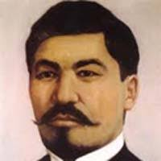

Алаш қозғалысының көсемі, қоғам қайраткері, ұлт азаттығы жолындағы тарихи тұлға.
Әлихан Бөкейхан – қазақтың тәуелсіздігі мен жерін қорғауға күш салған мемлекет және қоғам қайраткері. Ол ұлттық мүдде үшін күресіп, қазақ елін заманауи дамуға бағыттауға тырысты.
«Қазақстан және Қазақ» – қазақ халқының ұлттық мәселелерін, жер, құқық, мәдениет мәселесін қозғайтын еңбегі. «Қазақ автономиясы» – қазақ жерінің саяси автономиясын, өзін-өзі басқару идеясын дәріптейтін мақаласы. «Еңбекші қазақ» – халықты ояту, білім мен еңбекке шақыру мақсатын көздейтін публицистикалық жазба. «Орыс пен қазақ» – орыс-қазақ қарым-қатынасын талдайтын тарихи-саяси мақала. «Қазақтың ұлттық мәселесі» – ұлттың әлеуметтік және саяси жағдайын зерттеп жазған еңбегі.